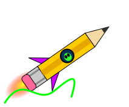
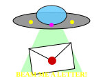

Welcome, Earthling

You have beamed down to the homepage of Inkwell Zed, amateur penman, part-time saucer watcher and full-time collector of the finest pencils in this or any other galaxy. Pull up a chair, sharpen something, and stay a while. Please do not touch the eyes.
This is a page about two things. Beautiful letters, and the things from beyond the stars that should never have learned to write them.
Grab your No. 2 and hold on tight.
I have been practicing my lettering since the fourth grade, when Mrs. Pruitt told me my capital G looked like a "squashed bug." Well Mrs. Pruitt, who is laughing now?? After 3,000 hours and a whole shoebox of broken nibs I can do Blackletter, Italic, Uncial and a Copperplate that has made a grown man weep at the county fair.
But here is my big secret. I do it all in pencil.
Everybody says you need a dip pen and a bottle of India ink. WRONG. Take a carpenter's pencil, sand the lead into a flat chisel, and hold it at 45 degrees. Presto! Thick downstrokes, hairline upstrokes, and no blots on your mom's tablecloth. My best work was done with a pencil I bought at the gift shop in Roswell, NM, and I swear it hums a little when the moon is full. I will post a step by step lesson with scanned pictures as soon as my cousin lets me borrow his scanner again.
Zed's Three Laws of Lettering:
1. Keep your pencil sharp and your wrist loose.
2. Never letter on an empty stomach.
3. If the letters start writing back, stop immediately and see below.

Now we come to the scary part. Reader, I am not making this up. On the night of March 13th, 1997, I left a practice sheet of the alphabet on my desk by the open window. In the morning every letter had been redone. Perfectly. In a hand so steady no human could hold a pencil that still. And there were 27 letters. The extra one sat between M and N and it looked like an eye that had been folded in half.
Since then I have kept a log of every anomaly I can find. Pencils that come back from the sharpener LONGER than they went in. Crop circles in Wiltshire that, if you trace them on onion skin, turn out to be flawless serifs. Erasers that leave a faint green glow on the page. A lead that writes only in the dark. Every one of these has happened to me or to a guy on Usenet who I trust completely.
My theory? They are not here for our cows. They are here for our penmanship. Somewhere out past Jupiter is a race with six eyes and no thumbs, and they would give anything for a decent ascender. If you have seen strange handwriting appear where it should not be, tell me about it. I will keep your name secret. They read the Internet too.

|
Lettering Lessons
|
||
|
Pencil Vault
|
|
|
|
Picture Gallery
|
||
|
Back to the Mothership |
Picture Gallery
It's UP!! TWELVE typographic anomalies (now with real photos!!) that prove we are not alone, including the 27th letter.
Enter the Gallery of Typographic Anomalies (if you dare).
NEW!! Celebrity Typographic Horrors. Six stars. Six fonts. One terrible truth.

Webmaster
You are visiting
www.geocities.com/Area51/Meteor/2178
Looks best at 800 x 600 with the lights off and the blinds closed.
If the eyes blink at you, that is not an animation.
All pencils were harmed in the making of this page.